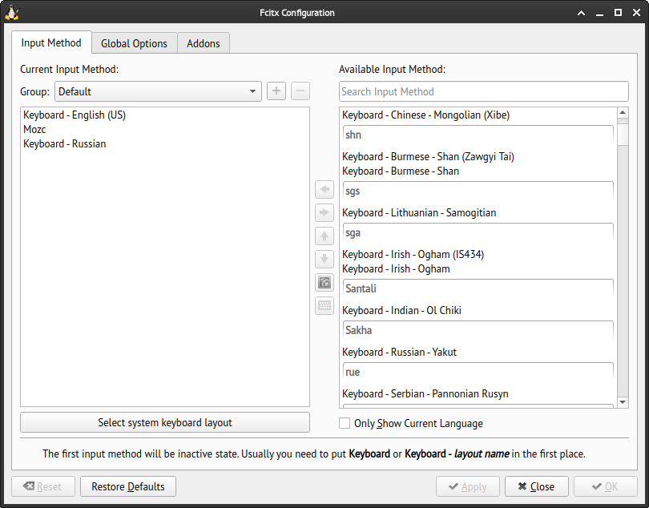
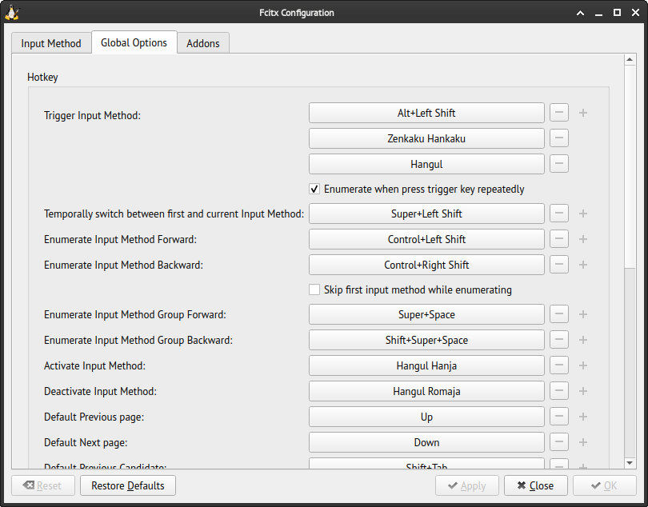

Setting up Japanese Input Method on Arch Linux with X11 and Xfce4
If you’re an Arch Linux user and you need to input Japanese characters, this post will guide you through the setup process. I’ll be using X11 and Xfce4 in this tutorial, and I’ll be using Fcitx5 and Mozc as the input framework and Japanese Input Method Editor(IME), respectively.
Prerequisites
Before we get started, make sure that you’ve uncommented the following locales in /etc/locale.gen:
en_US.UTF-8
ja_JP.UTF-8
And don’t forget to run locale-gen afterwards.
Next, install the Japanese font packages:
sudo pacman -S noto-fonts-cjk otf-ipafont ttf-hanazono and ttf-sazanami
Installing Fcitx5 and Mozc
Fcitx5 is a lightweight input method framework that provides a language support independent environment for Linux. It supports multiple languages, including Japanese, and also provides other useful non-CJK features. Mozc is a free and open-source version of the Google Japanese Input.
To install Fcitx5 and Mozc, run the following command:
sudo pacman -Syu fcitx5 fcitx5-configtool fcitx5-mozc fcitx5-qt fcitx5-gtk
fcitx5 package provides the main Fcitx5 program. The packages fcitx5-qt and fcitx5-gtk provide the integration for qt and gtk respectively, fcitx5-configtool provides the configuration GUI, and fcitx5-mozc provides the Japanese input method Mozc.
Setting environment variables for Fcitx5 IM module
Set the following enviromnet variables in your .bash_profile file:
export GTK_IM_MODULE=fcitx5
export XMODIFIERS=@im=fcitx5
export QT_IM_MODULE=fcitx5
export XIM_PROGRAM=/usr/bin/fcitx5
This will set up Fcitx5 as the default input method for GTK and QT applications. The last line export XIM_PROGRAM=/usr/bin/fcitx is a bit unusual and it’s used to enable Fcitx5 in the st terminal.
Note that if you’re using st terminal, you need to apply the patch st-fix-keyboard-input-20180605-dc3b5ba.diff to make it work with non-latin keyboard layouts. You can find the patch on the following link: https://st.suckless.org/patches/fix_keyboard_input/
Using Fcitx5 Configtool
The fcitx5-configtool is a user-friendly graphical interface for configuring Fcitx5. To access it, you can either launch the tool from the command line or locate the fcitx5 icon near the clock widget in the panel and click on “Configure”.
Once inside, check the “Available Input Method” section, search for Mozc and double-click it. If necessary, uncheck the “Only Show Current Language” option to display Mozc in the list.

In “Global Options” tab I changed “Trigger Input Method” to Alt+Left Shift and set “Temporary switch between first and current Input Method” to Super+Left Shift.

That’s it! Now you should be able to input Japanese characters on your Arch Linux setup with X11 and Xfce4.
References
https://wiki.archlinux.org/title/Localization/Japanese https://fcitx-im.org/wiki/Setup_Fcitx_5 https://jeffreytse.net/computer/2020/11/19/how-to-use-fcitx5-elegantly-on-arch-linux.html